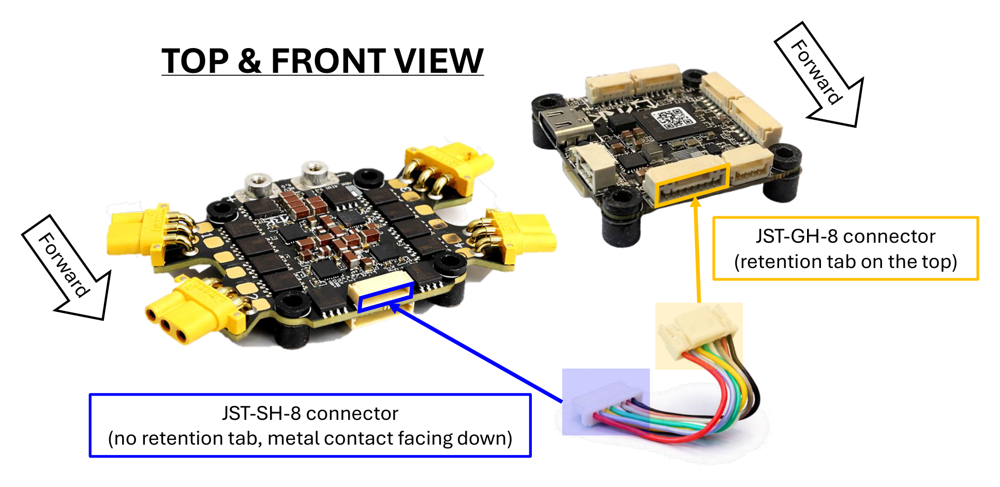
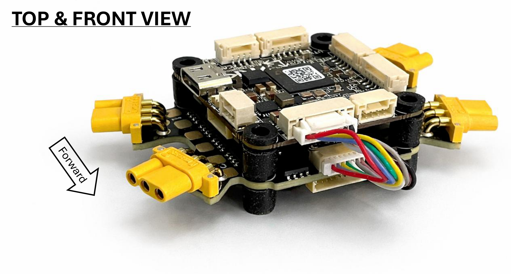
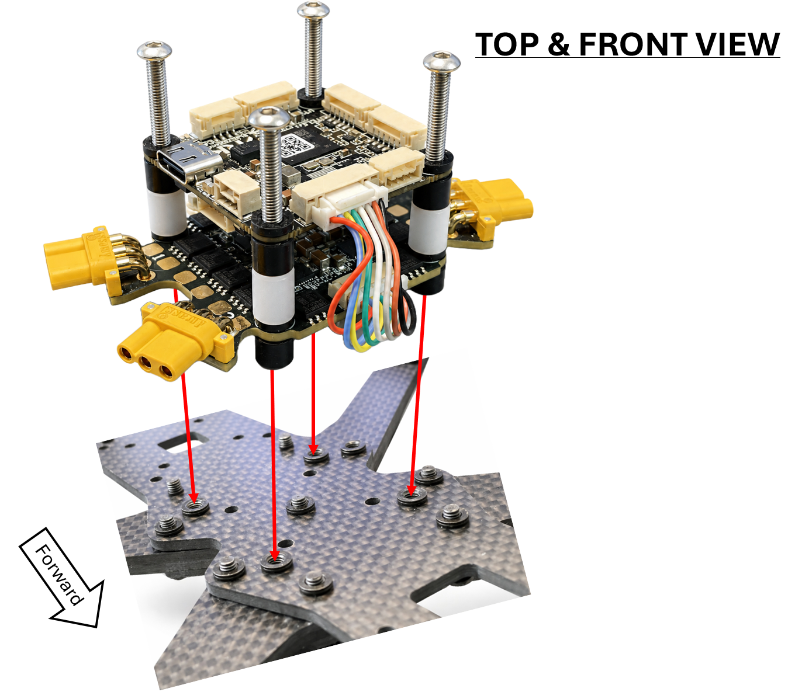
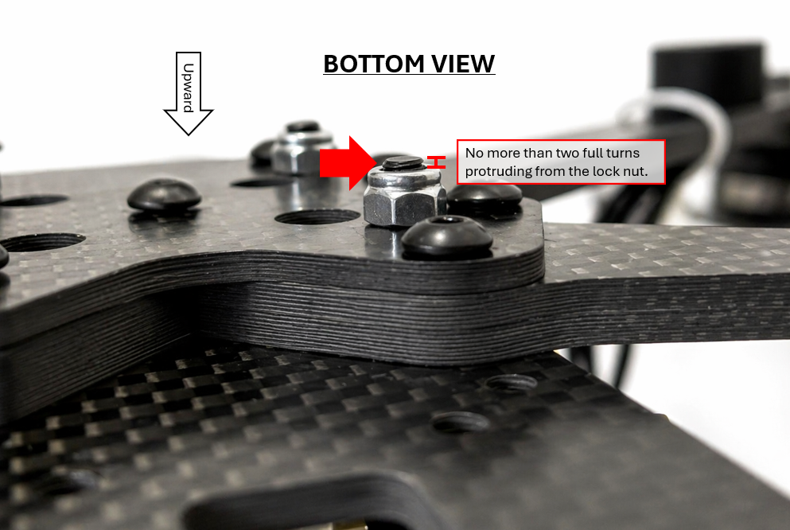

Task 6: Mount FC/ESC
Prepare the flight controller, connect it to the electronic speed controller, and install the FC/ESC stack.
Parts required
- Lower frame from Task 4
- ESC package
- FC/ESC cable
- Flight-controller package
- Flight controller
- Four silicone vibration dampers
- Frame kit
- Four M3 × 30 mm round-head screws
- Fastener kit
- FC/ESC Stack subkit
- Four M3 nylon-insert lock nuts
- FC/ESC Stack subkit
Tools required
- 2.5 mm Allen key
- 5.5 mm nut driver
- Needle-nose pliers
Step 1. Prepare the flight controller and electronic speed controller
- Retrieve an electronic speed controller package, one flight controller, and four silicone vibration dampers from the supplies shelf.
- Each bubble-wrap package contains two flight controllers and eight dampers. Take only one flight controller and four dampers for your team. Split the bubble-wrap package with another team. If you cannot find a partner set, ask an instructor.
- The top of the flight controller is the side with the USB-C port. The top of the electronic speed controller is the side with the gold contact pads.
Shared bubble-wrap package.
Each bubble-wrap package contains two flight controllers and eight dampers. Take only one flight controller and four dampers for your team. Split the bubble-wrap package with another team. If you cannot find a partner set, ask an instructor.
Each bubble-wrap package contains two flight controllers and eight dampers. Take only one flight controller and four dampers for your team. Split the bubble-wrap package with another team. If you cannot find a partner set, ask an instructor.
Identification check.
The flight controller top is the side with the USB-C port. The ESC top is the side with the gold contact pads.
The flight controller top is the side with the USB-C port. The ESC top is the side with the gold contact pads.
Step 2. Install the silicone vibration dampers
- Install the dampers on the flight controller and electronic speed controller as shown in Figs. 6b and 6c.
- To install a damper, flatten it by hand, push it through the PCB hole, and then gently pull the stem through with the needle-nose pliers.

Fig. 6b. Dampers on the flight controller.

Fig. 6c. Dampers on the ESC.
Step 3. Connect the flight controller to the electronic speed controller
- Retrieve the FC/ESC cable from the ESC package.
- Identify the two ends from Fig. 6d. The JST-SH connector does not have a retention tab. The JST-GH connector does.
- Insert the JST-SH connector by hand into the electronic speed controller receptacle at the center of the front edge. The visible metal contacts must face down toward the board.
- Insert the JST-GH connector by hand into the flight controller receptacle on the right side of the front edge.

Fig. 6d. FC/ESC cable. JST-SH on the left, JST-GH on the right.

Fig. 6e. Connector orientation when inserting the FC/ESC cable.

Fig. 6f. Flight controller and electronic speed controller connected.
Step 4. Install the FC/ESC stack on the frame
- Stack the electronic speed controller and flight controller as shown in Fig. 6g.
- Insert the four M3 × 30 mm round-head screws from the frame kit through the silicone dampers, top to bottom, by hand.
- Start the four M3 nylon-insert lock nuts from the FC/ESC Stack subkit on the bottom of the frame. Finger-tighten only.
- Using the 5.5 mm nut driver on the nuts and the 2.5 mm Allen key on the screw heads, tighten in a crisscross pattern.
- From the bottom view, stop when no more than two full turns protrude from each lock nut, as shown in Fig. 6h.
Why this matters.
The dampers are very flexible. Without a fixed stop point, it is easy to overtighten and damage them before you realize it.
The dampers are very flexible. Without a fixed stop point, it is easy to overtighten and damage them before you realize it.

Fig. 6g. Flight controller and electronic speed controller stack installed on the frame.

Fig. 6h. Bottom view. No more than two full turns should protrude from each lock nut.
Common errors
- Installing a damper upside down or tearing it with the pliers.
- Mixing up the JST-SH and JST-GH ends of the FC/ESC cable.
- Inserting the JST-SH connector upside down so the contacts do not face the board.
- Overtightening the stack and crushing the dampers.